Serie Éclairs sur l'Au-Delà
Música de Oliver Messiaen.
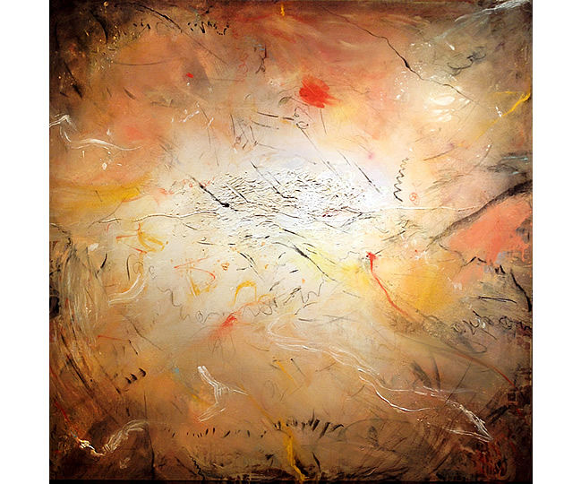
Las estrellas y la Gloria
195 × 195 cm. Mixta sobre lienzo. 2012.
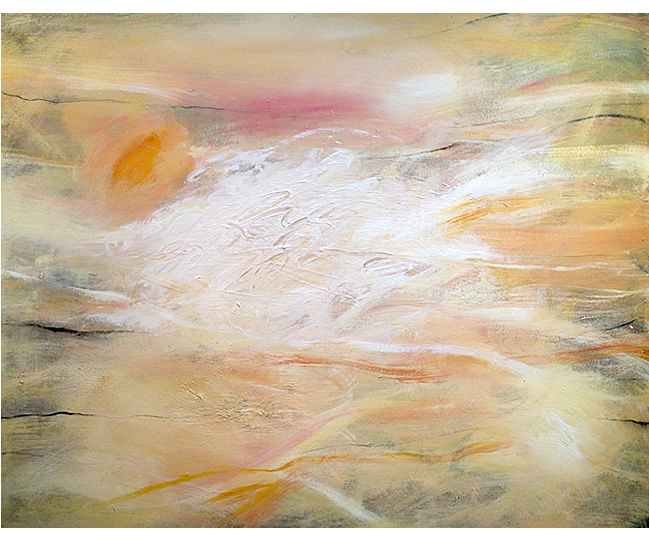
Permanecer en el amor II
97 × 130 cm. 2012.
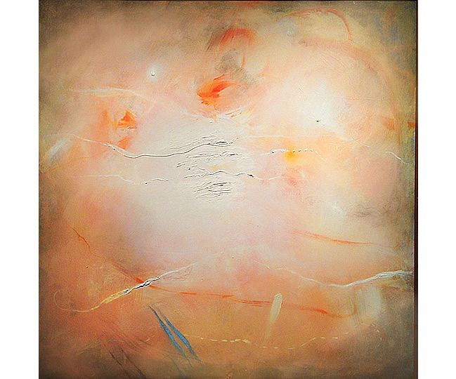
Luz del Paraíso
200 × 200 cm. Mixta sobre lienzo. 2012.
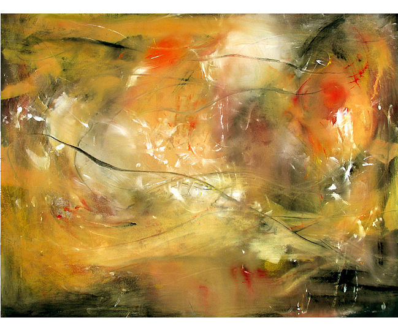
Ángeles
97 × 130 cm. Mixta sobre lienzo. 2008.
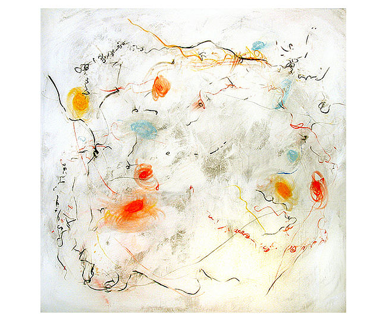
Pájaros
200 × 200 cm. Acrílico y pastel sobre lienzo. 2004.
Colección Museo de arte contemporáneo de Huelva.
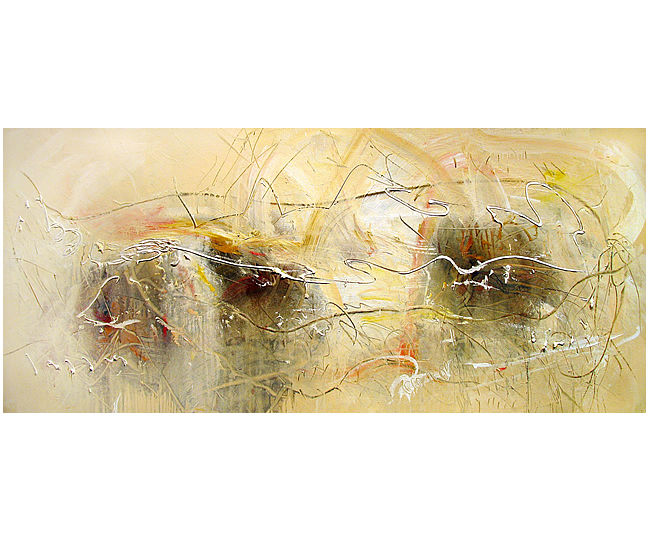
Lo invisible
84 × 194 cm. Mixta sobre lienzo. 2005.
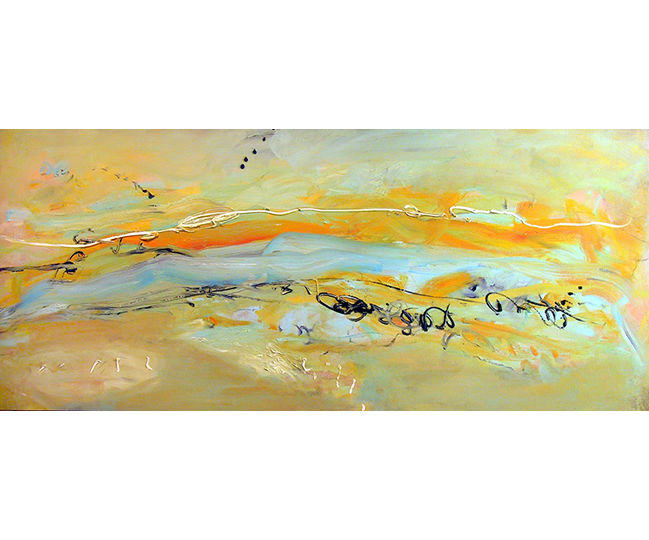
Lágrimas
87 × 200 cm. Mixta sobre lienzo. 2004.
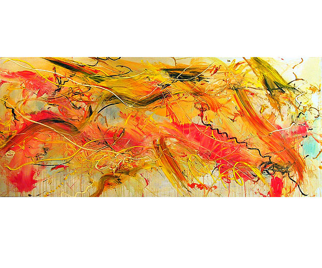
Pájaro Lira
87 × 200 cm. Mixta sobre lienzo. 2004.
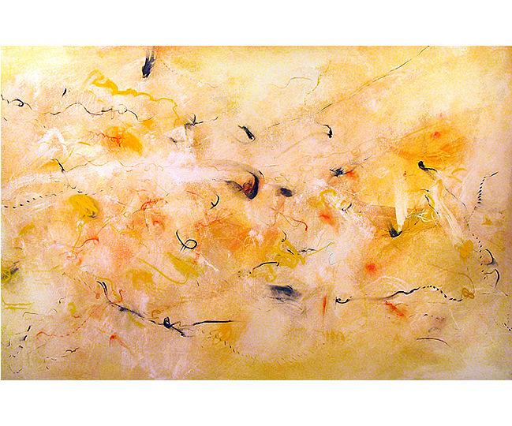
Elegido
128 × 200 cm. Mixta sobre lienzo. 2004.
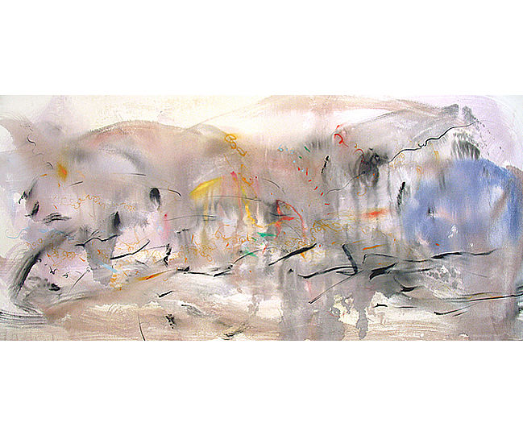
Las estrellas y la Gloria
87 × 200 cm. Mixta sobre lienzo. 2005.
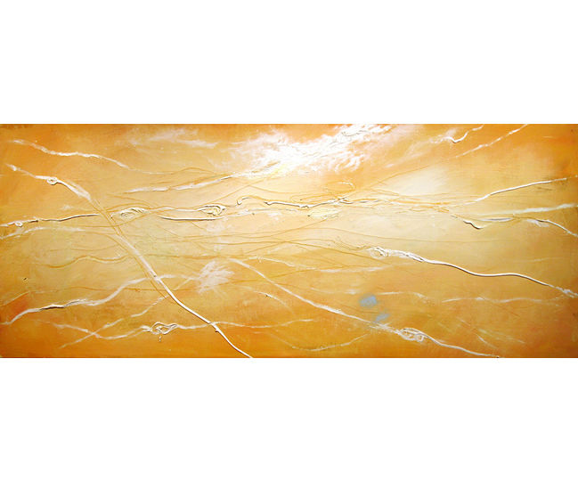
Aparición
203,5 × 79,5 cm. Mixta sobre lienzo. 2005.
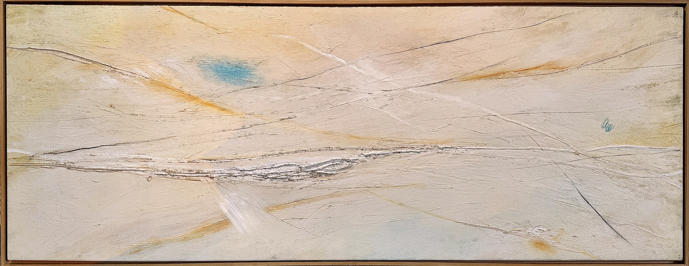
El Amado
75 × 200 cm. Mixta sobre lienzo. 2026.
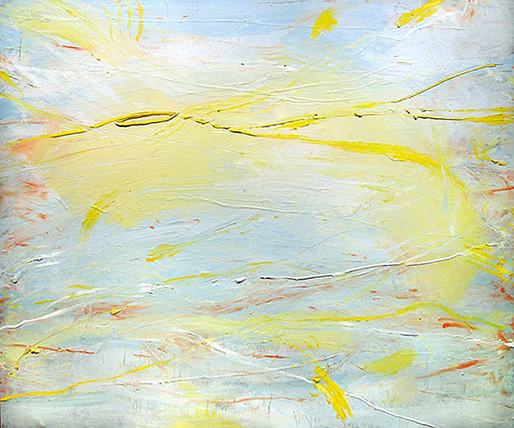
Aparición II
180 × 200 cm. Mixta sobre lienzo. 2008.
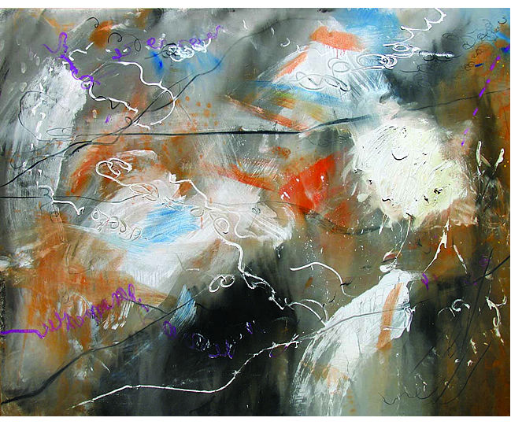
Constelación de Sagitario
130 × 162 cm. Mixta sobre lienzo. 2008.
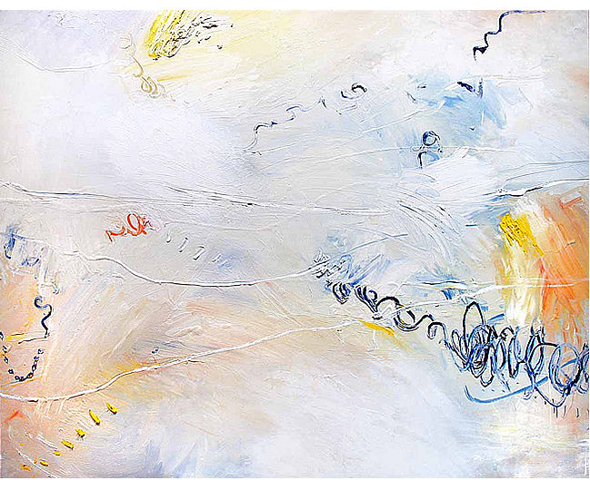
Lágrimas II
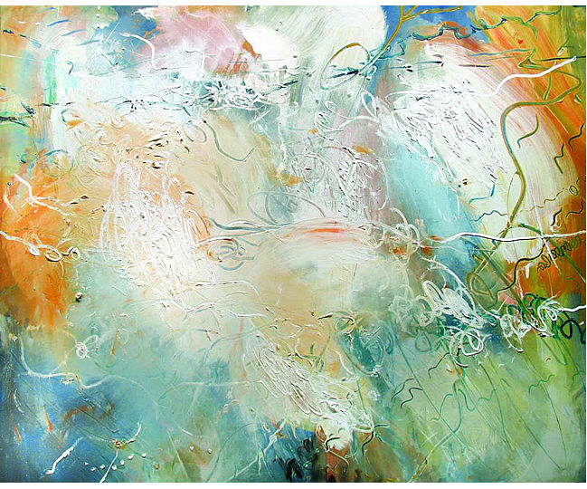
Los Elegidos
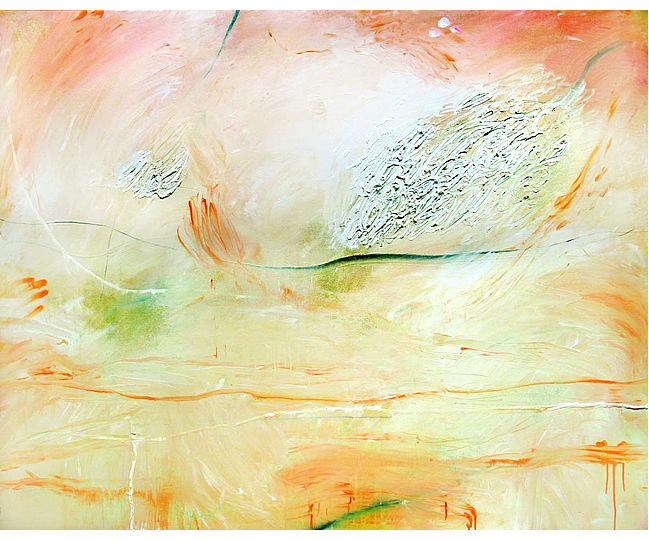
Permanecer en el amor
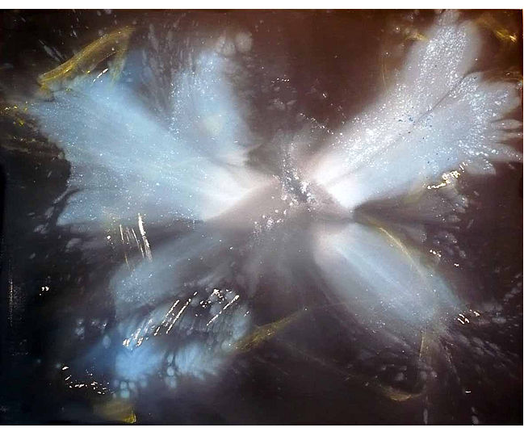
Siete Trompetas
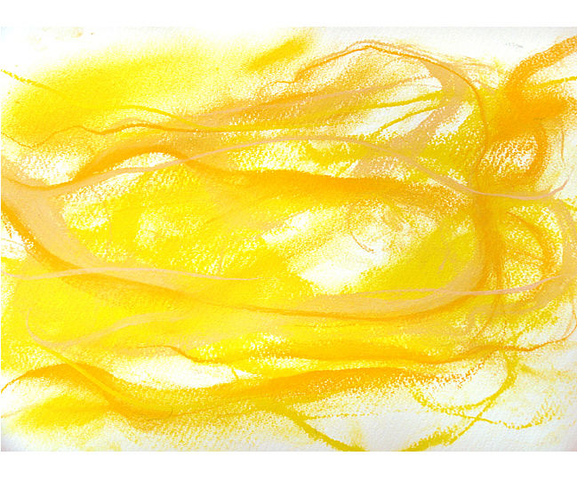
Dibujo nº 1
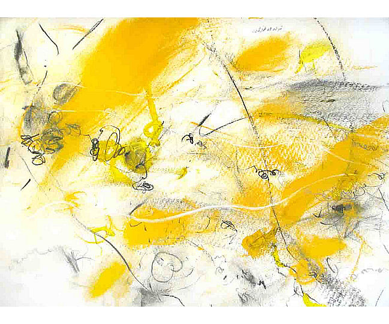
Dibujo nº 2
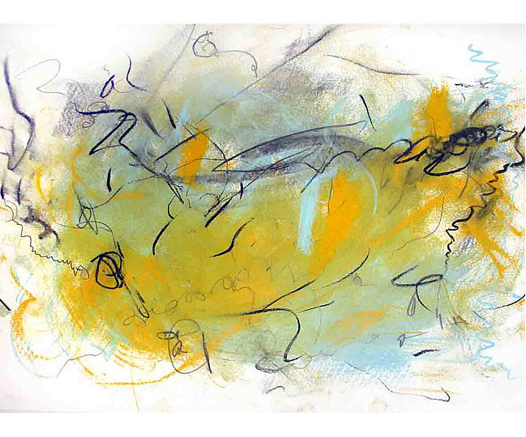
Dibujo nº 3
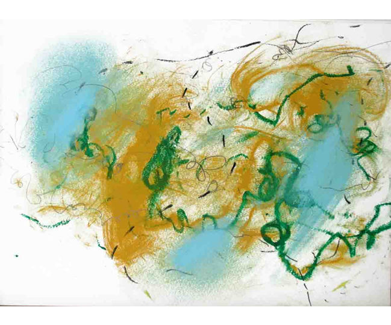
Dibujo nº 4
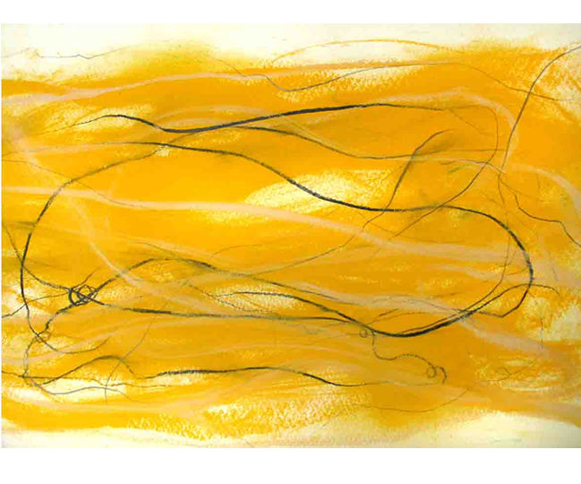
Dibujo nº 5
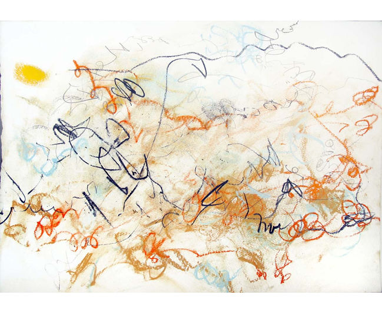
Dibujo nº 9
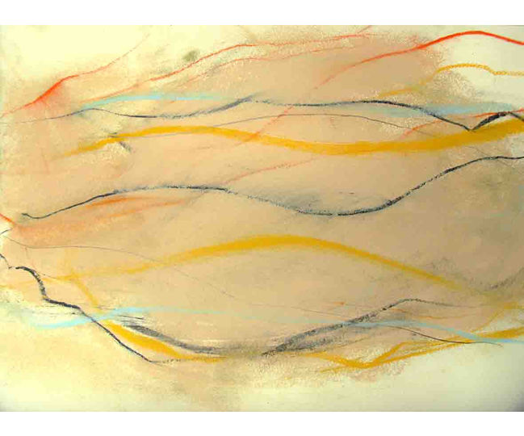